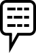

You are an author, a very special kind of worker. What you make is the product of your singular personality and that is why you get a lot of control over how others can use the fruits of your labour. This is the theory of copyright. In practice, works and authors tend to drift apart. Once your work is out there and others have connected to it as a public, as researchers, as inspired artists, etc., how much control can and should you still exert? Then, eventually, you die. What happens, if your work has managed to find itself in an archive, a back catalogue, a collection and maybe even somewhere in the public consciousness? You were the author, that special someone who got to control the copies. What happens when you are no longer around?
Some of the influential early voices in copyright thought it should cease with death. Victor Hugo was sceptical of his heirs’ capacity to look after his work. We should not, he said, “mistake the descendant of blood for the descendant of spirit.” And after all, “the heir doesn’t make the book, they cannot have the copyright.” Victor Hugo, Discours D’ouverture Du Congrès Littéraire International de 1878. Hugo made these remarks in a speech at a symposium with colleagues. Yet the eighteenth and nineteenth centuries provided little in the way of a social safety net and, for those negotiating the first conventions on authors’ rights, the idea that authors could use their copyright to provide for their families after their demise was very attractive.
Today’s copyright does not last forever, though. This is because a book belongs to its author but also, in the words of Hugo, “[…] to humankind. Every intelligence has a right to it.” Your heirs might have an interest in the work but the public might, too. Why should it be up to the heirs to decide which kinds of copying are allowed and which are not? This is why copyright has evolved to reach a compromise: copyright lasts after death but for a limited time. Still, it’s a pretty long time—at least 50 years, 70 in most parts of the world. After this time, whatever you have made belongs to the public.
The public domain is not the same as the public consciousness. Groups of people share common cultural references. You probably know Martin Luther King made a famous speech in which he says that he has a dream and you probably know that his dream is one of racial equality. Yet if you want to listen to that speech in its entirety, you might have a hard time finding it online. Let alone if you want to republish the speech, print the text in a school book or sample the recording for a piece of music. The rights of the sound recording of I Have a Dream (1963) are with the King family, who have partnered with EMI (now Sony) to exploit it. Users of online services like YouTube play cat and mouse with the rights holders. Once an illegally uploaded video is removed, another one pops up somewhere else. In contrast, once a work is in the public domain, copyright restrictions no longer apply.
The public domain contains those works that used to have copyright but no longer do. This aspect of the public domain is the most well-known and is treated in this chapter. The term also refers to works that did not have copyright protection to begin with. Facts or other pieces of information that do not meet the creativity threshold required to be considered a creative work are in the public domain. Finally, some countries may have additional legal restrictions on copyright. In most countries, the text of laws and court rulings are considered to be in the public domain. In the United States, all work done by federal employees is in the public domain as well. This means, for example, that the Migrant Mother (1936) photo taken by Dorothea Lange is in the public domain because she was working for a federal government agency at the time, the Farm Security Administration.
When does a work of art that initially has copyright join the public domain? The Berne Convention, a treaty first ratified in the nineteenth century and now signed by most countries in the world, establishes the almost universal way of determining copyright length, which is literally based on the death of the author. Therefore, we need to know two things, who is the author and when did they die.
The Berne Convention lists 50 years as the minimum duration of copyright after death. In most countries, including the US and all EU member states, economic rights last 70 years after death. The rule is to round up to 31 December of the year that protection ends. For example, the work of Virginia Woolf, who died 28 March 1941, became part of the public domain 1 January 2012.
Even if the length of copyright (“the copyright term”) is the same for all EU countries, there are still exceptions specific to each country. This means a work could be in the public domain in some countries and not in others! For example, France has instituted copyright extensions for works that could not be exploited because of the World Wars and added additional extensions for authors recognised as mort pour la France—casualties of war. After all, because copyright is calculated from the date of death, works of artists who die young have protection for a shorter time. Even if the reasoning for such exceptions is understandable, it doesn’t make life any easier for those seeking to understand if a work belongs to the public domain or not.
Another complicating factor is that copyright consists not only of economic but also moral rights. These include the right of attribution and respect for the integrity of the work. While in many jurisdictions these rights lapse at the same time as economic rights, several countries, including France, insist moral rights last forever.
Several European institutions have collaborated to produce public domain calculators to try and alleviate some of the pain of figuring out the public domain status of a work. For many EU member states, outofcopyright.eu is such a tool. It helps determine whether a work is in the public domain by asking a series of questions. The website publishes flow-charts of the underlying decision to make the complexity of the assessment visual.
A potentially complicating factor is that one needs to know who the author of a work is. Work might be published anonymously, in which case copyright lasts until 70 years after publication—unless the author has since made themselves known! A work can also have joint authorship. In that case, the law stipulates that the year of death of the longest surviving author determines the year of entry into the public domain.
In most cases, whether the artists assigned their rights to a company does not change the way its duration is calculated. In France, there is a special case for work that has been elaborated by a group of employees of whom individual imprints can no longer be clearly distinguished in the final result. In this case, since the work cannot be associated with an individual author, copyright will be attributed to the company and it will enter the public domain 70 years after the date of publication.
When a work enters into the public domain an interesting tension arises between the ideology of authorship and business interests. While artists are alive, collaborators and business partners have a vested interest in maintaining an image of individual authorship. As we’ve seen before, copyright is based on an idea of the author as someone who leaves an imprint of their unique personality. The creative work is intimately tied to its author. This resembles closely the way many people interpret culture. We might wonder which Taylor Swift song maps to which of her ex-lovers. However, the process by which a song gets written involves a large number of authors. The popular press could just as well dig up details about the romantic life of Max Martin, a Swedish songsmith, producer and Swift’s co-author, and try to link the songs to his exes. Yet there are hardly any interviews with Max Martin, who has worked on a string of hits ever since the Backstreet Boys. This is what Roland Barthes calls “the tenacity of the author”: we like to consider the work of art as coming from one person and in particular as having a relationship to their life experience.
Record companies, book publishers and art galleries do their part in helping to maintain the image of the author as an autonomous force who is fully and individually responsible for their work. Yet when a work is about to enter the public domain, publishers and co-authors are quick to assert their role in the creative process and claim their own rights.
A rather tragic example of rights-holders reassessing authorship can be found with the diary of Anne Frank. The diary emerged after World War II as a poignant testimony of the Holocaust. Throughout the years, its authenticity has been doubted, mainly by sympathisers of the extreme right. Frank’s father, Otto Frank, was at various times accused of being the diary’s actual author. He fought these allegations successfully all his life. The non-profit organisation to whom the copyright of the diary was bequeathed after Frank senior’s death is fearful of the work entering the public domain. To prevent this from happening, they posit that because of his edits to the manuscript Otto Frank is a co-author. Because he died in 1980 and not in 1945 as did his daughter, their copyright will last 35 years longer than it would have. Yet in making such a claim for co-authorship, the Anne Frank Foundation has come to contest a notion that was once at the core of its convictions: that Anne Frank is the sole author of the diary.
The interest of publishers in contesting the public domain status of a work seems clear. As soon as a work enters the public domain other publishers can make editions of the same work, leading to a possible loss in profit for the original publisher or current rights-holder. The interest of heirs is less clear, although money plays a role as well. There are families who have built copyright-licensing empires, those of Picasso and Hergé come to mind. But many artists assign copyright to foundations and non-profits, as in the case of Frank. Even when profit is technically not an issue, those foundations might have salaried employees who have a vested interest in keeping copyright-licensing fees going. Though of course it is hard to imagine this is the only motivation for wanting to retain ownership over an oeuvre. It is more likely that a sense of stewardship plays a role as well. Families continue the work of the artist who, as we noted in chapter 2.3, not only creates works but also crafts an oeuvre. In their lifetime, artists already had to make careful considerations about where to publish and with whom. Families can continue this work and deny any publication of the work that is not under the right conditions or that they believe is not respectful enough of the artist’s work.
Creative labour is not like other kinds of labour. As authors, the product of our creativity is supposed to be so intimately related to our personality that we are allowed to control what happens to our work even after we let it out into the world. Legally, this control remains equally strong from the moment we publish a work until the day we die. Now, it is possible to assign a large part of the control to someone else—as an author, it is quite usual to sign over control to a publisher. But that still leaves control to a single party, supposedly acting in the interests of the author. Copyright hardly recognises the many different links that develop over time between a work and its public and if it must choose between the public and the author (or the publisher), copyright will often choose the latter.
That copyright remains equally strong throughout the author’s life is questionable—why do I, at 90, get to decide whether someone makes a movie adaptation of a book I wrote at 33? Hugo again: “From the moment the book is published, the author is no longer its master.” If there were an elegant way to make copyright erode over time and progressively grant the public more rights to adaptions and reinterpretations, that would definitely have my support. It is more problematic still, I find, to posit a strong link between the work of art and the heirs that survive the artist for 70 years. As an artist you do have some influence on what happens after your death. If you’ve managed to hang on long enough to your copyright, you can decide who to bequeath it to in your will. But 70 years is a long time. Your children (if you have them) will most probably be dead themselves and if the copyrights belonged to a company that company is more than likely to have gone bankrupt or to have been bought up. Whoever ends up with the rights will probably have minimal connection to you and, by extension, the work of art. It is hard to maintain that this legal connection is stronger than that felt, for example, by a scholar who researches the oeuvre or by another artist who is inspired by it. This is what Hugo means when he discerns between blood descendants and spirit descendants and this is the essence of public domain. As the line between artist and work grows fainter, links between the work and members of the public can grow stronger. Does it make sense that a company which bought a company that bought a company that originally published a work gets to decide how it gets reproduced and adapted? Or the children of the children of the author? Copyright gives power to the author because it recognises the work as an expression of an individual vision but those who end up with the copyright down the line might only have a vague notion of that vision. That’s why the control granted by copyright gets harder to defend the longer it lasts and that’s why it lasts only for a limited time.
The statute of the public domain, in contrast, allows everybody to reproduce the work. Gone is the power of the heirs to cherry-pick partners and publishers. Continuing the oeuvre evolves from a top-down curatorial approach into a do-ocracy. Those artists, performers and editors that most successfully reproduce and appropriate the work will have the largest influence in its reception.
Continued dialogue about a work in the public domain is seen in many disciplines. In classical music, musicians and conductors continue to offer their own interpretations of music first composed hundreds of years ago. In literature, new critical editions and translations continue the interpretation of texts. Theatre-makers continue to stage texts of Euripides, Shakespeare and Chekhov right up to García Lorca (whose premature death made his work available in the public domain in 2007). While their efforts will be judged by the public and by critics, they know they have creative freedom something that cannot be said of theatre-makers working with younger texts.📃 Michael Paulson, A Black Actor in ‘Virginia Woolf’? Not Happening, Albee Estate Says. As recently as 2017, the estate of Edward Albee blocked a representation of “Who’s Afraid of Virginia Woolf?” that cast a black actor as the male lead.
For most works in the public domain, it’s been a long time since they were first published. If we discover the work today, it is because many have laboured to document, archive, transmit, reproduce, interpret, translate and digitise it. When it comes to copyright, you have to take into account the layers of interpretation that separate you from the work’s first edition. These layers of mediation might have created new rights of their own.
In the case of music, new interpretations can bring new rights. The copyright concerns only the composition but the performers and also the record producer hold so-called neighbouring rights up to 70 years after the release of the record. So, if you want to add Bach’s Goldberg Variations (1741) to your movie, you won’t be able to use Glenn Gould’s interpretation (neither the 1955 nor the 1981 one) without paying royalties to CBS and the Gould estate. You could, however, use a version that is too old to still have neighbouring rights, like Wanda Landowska’s 1945 version. You could also produce a recording yourself or you could use an interpretation that was donated to the public domain by the musicians and producers. In 2012, Kimiko Ishizaka made such a recording as part of the Open Goldberg Variations project.
When it comes to text, new editions bring new rights only if there are new elements. If the original text is out of copyright, a new edition might include a preface and explanatory footnotes and these will still have copyright. To be on the safe side, try to find the original edition of a text. A translation will certainly bring new rights as it is considered a derivative work of the original text, which has its own copyright until 70 years after the translator’s death. If you want to be able to freely reproduce a translated text both the original text and its translation need to be in the public domain.
When it comes to images, new reproductions can bring new rights. In this case, there is a difference between two-dimensional and three-dimensional images. For sculptures and other three-dimensional works, any image of it will most likely be a creative work in itself. This is because to have taken a picture of a sculpture the photographer will have had to make a number of creative choices in lighting and framing.The picture will be considered a derivative work and be under copyright until 70 years after the photographer’s death. If you have access to the original work you can of course photograph it yourself.
Two-dimensional images like drawings and photographs are amongst the materials most often remediated. Existing images can be used as source-material for new drawings and they may also accompany non-fiction writing and audiovisual productions. While digital photography blurs the distinction between source and reproduction, the larger part of our history comes through us digitised from analogue sources. Does digitisation add a new layer of copyright? The answer depends on whether the reproduction is a creative work itself, like a translation or a movie adaptation. The question is pertinent because there is an enormous wealth of reproductions already available. Museums, archives and libraries have scanned and photographed large collections of images and documents. In many cases, there is no way to get to the original document and even if you could it would not be easy to create a high-quality reproduction.
One of the requirements for the attribution of copyright is creativity. Making a faithful reproduction of an image is painstaking. To photograph a painting, for example, takes a large amount of skill and patience as well as expensive equipment. But does it take creativity? Insofar as the goal of the exercise is to create a copy that is as faithful as possible to the original, creativity does not seem to be the main game. A faithful reproduction of a painting can be valuable economically and culturally but is not protected by copyright.
A photographic reproduction of a two-dimensional work requires skill but no creativity therefore it does not get copyright. This is the reasoning judges have followed in the US (Bridgeman vs Corel) and in 2015 the UK Intellectual Property Office recently affirmed it, too.📃 Intellectual Property Office, Copyright Notice: Digital Images, Photographs and the Internet. Unfortunately, as often is the case when a certain kind of cultural artefact is not covered by existing intellectual property law, legislators will move in to help cover the supposed gaps. A number of European countries have therefore expanded their laws.
Outofcopyright.eu researches the position of different European countries. For reproductions requiring skill but no creativity, the following countries add extra intellectual property rights: Austria, Denmark, Finland, Germany, Iceland, Italy, Norway, Spain and Sweden. The following countries do not: Belgium, Bulgaria, Croatia, Czech Republic, Estonia, France, Greece, Hungary, Latvia, Lithuania, Luxemburg, Netherlands, Poland, Portugal, Romania, Slovakia and Slovenia.
Interpretations of existing works add layers of new rights and that also holds for you and your creative output when you use public domain materials as part of it. If you make a folk tale into a movie, if you rework a nineteenth century engraving into a political illustration or if you incorporate the diary of an eighteenth-century diplomat into a theatre play, your new creation will get new rights. As long as it is clear that you have made a series of creative choices following a certain artistic vision, then the work you made will have its own copyright, which will in turn endure until 70 years after your death.
This might seem strange. After all, you’ve based yourself on something freely available and now no-one can copy your interpretation. Indeed, there is a certain hypocrisy in the fervour with which corporations like Disney champion restrictive intellectual property legislation, while at the same time basing their most famous works on fairy tales, myths and novels from the public domain. Yet, copyright always entails a privatisation of sorts. As an artist you are given the right to exploit a piece of culture you created but where did you find the ingredients? You copy and sample what you know within the limits of the law and you use what you’ve obtained to make something new. While this does not give you any rights over your sources, this new constellation becomes your private property. You get the right to exploit or open up that property as you see fit. And after a set period of time, that right expires.
Copyright deals with copying and you’re free to copy a public domain work. But to be able to do so you have to be able to access the work. Intellectual property is not the same as physical property. The person who owns the physical object that you are looking to copy can still prevent you from doing so.
When you buy a nineteenth-century photograph at an auction, you can decide to scan it. You can then use it as part of your own work. You can also upload it to a website like archive.org or Wikimedia Commons, which will allow others to download it and use it as well. You can do both of these things. Or you can do neither. You can leave the photo in a drawer. Someone else might want to scan the photo but that will only happen if you let them into your house it’s your house, and the photo is your physical property.
The difference between physical ownership and intellectual property is very important for cultural institutions. Museums, libraries and archives don’t own the copyright to the works in their collections. The copyright mostly stays with the makers and once the work is old enough to enter the public domain there is no copyright anymore.
The reproduction of public domain works from the collections of cultural institutions is a complicated subject. Many cultural institutions have in their collection both copyrighted works and public domain works to which they hold the access and of which they sometimes sell reproductions. This might be in physical form such as postcards and posters or in digital form for publications. The public domain works are potentially lucrative because the institution no longer needs to pay any rights-holders. Yet, exactly because there are no rights-holders, the museum has to make an effort to maintain their monopoly on these reproductions. After all, anyone could legally sell a reproduction of these works. What institutions do is leverage the fact they own the works and can regulate access. For example, some museums simply prohibit taking pictures in their spaces. Most institutions take a subtler approach and just prohibit the tripods and lighting installations necessary for professional-quality pictures.
The internet has driven down the cost of copying culture dramatically and this has a profound impact on the exploitation of public domain reproductions. It can be really expensive to produce a digital reproduction but once it is available online it can be copied at nearly zero cost. And with work in the public domain, there is nothing preventing people from doing so. This sounds like bad news for companies who try to make money distributing copies of public domain works. And it should come as no surprise that commercial services like Getty Images tend to hide the fact that some of the images they offer for licensing are actually in the public domain. But it sounds like great news for heritage institutions like museums and archives that service the public interest. Finally, their collections can travel further quicker and reach and inspire more people than ever before.
Unfortunately, it is not always that simple. There are a number of reasons why museums and other heritage institutions may want to prevent their reproductions from circulating. The first are financial. Many archives and museums want to maintain a monopoly on reproductions so they can charge usage fees for these reproductions. Today, to be eligible for government funding institutions will have to show they are able to provide revenue streams. As a Dutch taskforce from the heritage sector writes: “There is a fundamental tension that underlies the policies of pricing and exploiting [reproductions] between ensuring the broad accessibility of the collection and developing cultural entrepreneurship. The (national) government wants heritage institutions to achieve both goals, but are they compatible?”📃 Annemarie Christiane Beunen and Tjeerd Albert Schiphof, Juridische Wegwijzer Archieven En Musea Online.
In exploiting public domain reproductions, institutions mimic the models of which we are familiar from copyright licensing. Museums will often charge the public for a reproduction in regard to the intended circulation. For instance, the number of copies of the publication, the size of the image, its relative importance in the layout. These ways of establishing pricing resemble the kind of negotiations one can have when establishing a copyright license (see chapter 3.3, Setting the Conditions of Copying: Licenses). According to the Dutch report, some institutions go as far as to state fake copyright claims (© museum). They aim to obscure the fact that the works in reality have no copyright anymore, while playing on people’s fear of getting into legal disputes over copyright infringement.
In spite of these efforts, it hasn’t proven easy for heritage institutions to make selling reproductions profitable. In one of the first comparative studies into this subject, researcher Simon Tanner writes: “Everyone interviewed wants to recoup costs but almost none claimed to actually achieve or expected to achieve this. […] Even those services that claimed to coup full costs📃 Simon Tanner, Digital Libraries and Culture A Report for UNESCO. generally did not account fully for salary costs or overhead expenses.”
Still, just like with heirs preventing living artists from reusing the work of dead artists, there are convictions that run deeper than money. When meeting with agents from the world of heritage, it is surprising to note the resistance to the very idea of openly disseminating reproductions from the collection. Like heirs, museum people can feel like stewards of a body of work, responsible for upholding its reputation. Making reproductions publicly available and putting no restrictions on their further use opens the door to others appropriating the work of that heritage. While one could say this is the very goal of cultural heritage institutions, the open-ended nature of such unrestricted access is also quite scary. An institution is always able to control the framing of their collections as long as they stay within the confines of the institution. This is no longer the case when reproductions are freely available. In most countries there are no moral rights on public domain images so there is no requirement and even less of a guarantee that images will be properly credited. The historical context may be ignored or misread.
The public domain is an incredibly rich source to build upon. Unfortunately, it takes a long time for a copyrighted work to get there and once it does heirs and heritage institutions might still try to shield access. You might then be tempted to shorten the cycle for your own creative production. To this end, Swiss artist Mario Pasternuk has created a public domain donor card that means, when you die, your heirs know you did not leave copyright to them but to the public.📚 Dominik Landwehr, Public Domain.
Under European law it is not easy to unambiguously donate your work to the public domain because by design you cannot trade all your rights. You can sign off your economic rights but your moral rights are inalienable: they can only ever apply to you. This means you will always have the right to protest an edition of your work that is not properly credited or which does not respect the spirit of the original. Donating your work to the public domain also means relinquishing this control. This is why Creative Commons has come up with the CC0 license, a legal document that you can apply to your work and by which you promise to relinquish economic rights and not to make use of whatever other rights you might have.
While you are still alive, you might not want to give up control completely. That is why there exists Creative Commons licenses that allow you to retain varying degrees of control over your work. Unless the law changes and the balance of rights between authors and the public (themselves potential authors!) gets restored somewhat, it is up to individual authors to provide more access, at least to parts of our production, so that no-one has to wait for our death.